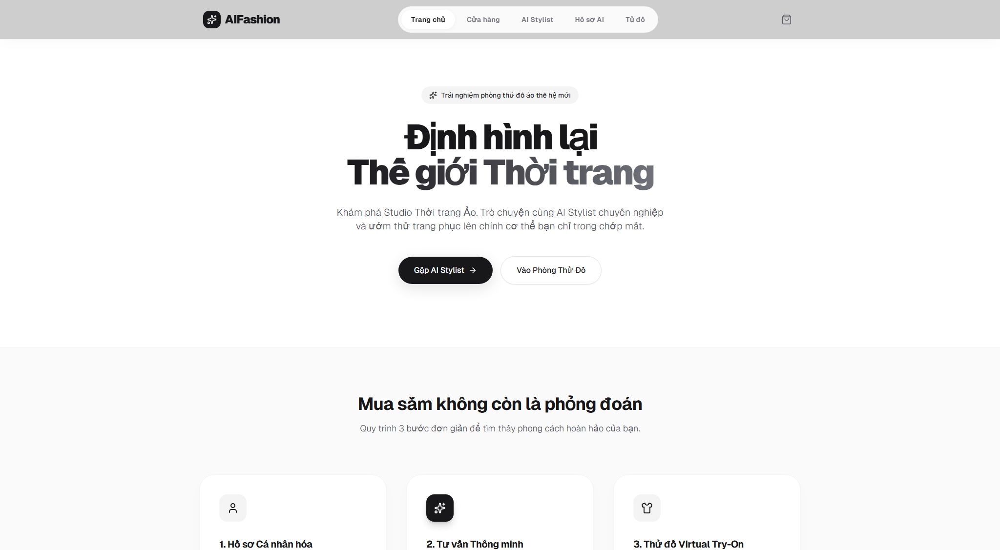
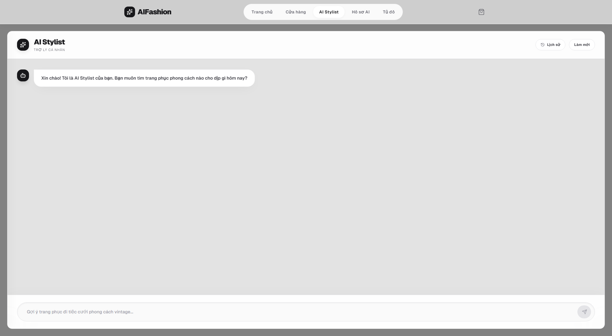
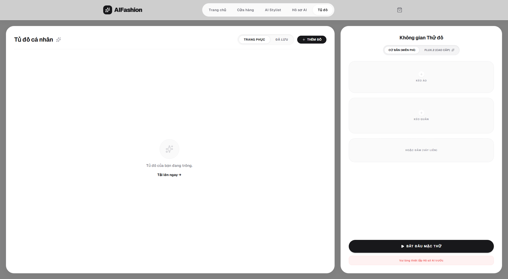
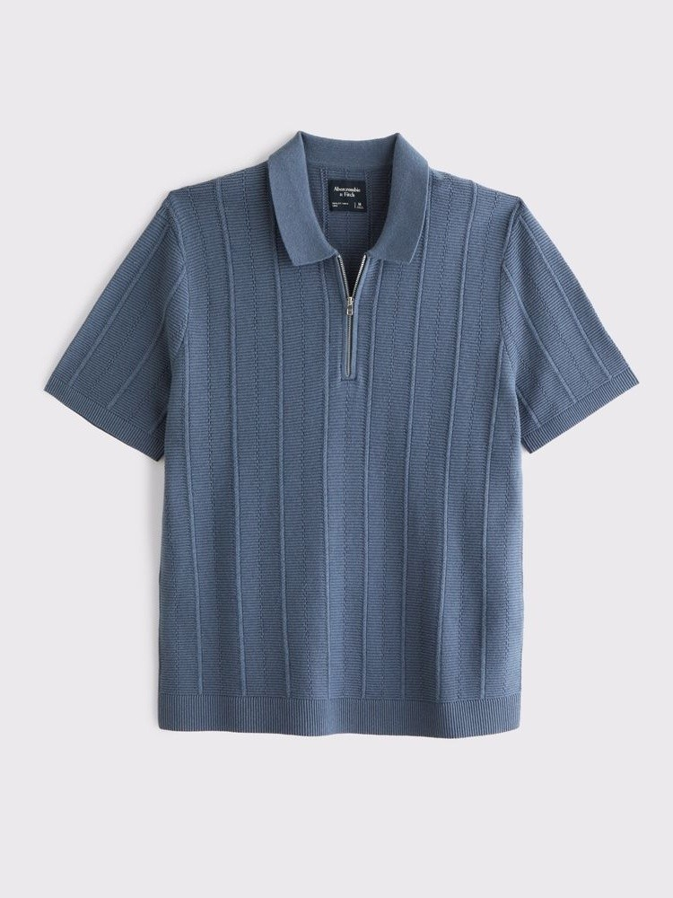
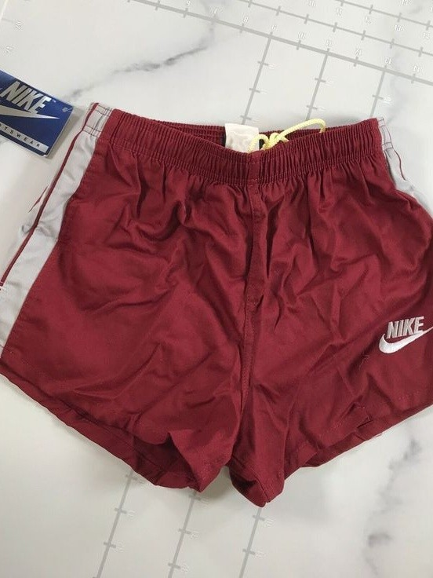

Trang phục này có hợp với vóc dáng của tôi không?
Đại học Phenikaa · Khoa học Máy tính
Báo cáo đồ án cơ sở
AI Fashion E-commerce
Xây dựng hệ thống thương mại điện tử thời trang tích hợp AI Stylist & Virtual Try-On
Từ yêu cầu bằng ngôn ngữ tự nhiên đến gợi ý phối đồ, thử đồ ảo và hành động mua hàng.
Timeline
Nội dung trình bày
Đi từ vấn đề thực tế đến giải pháp, kiến trúc và kết quả thực nghiệm.
-
01
Bài toán & mục tiêu Vì sao trải nghiệm mua thời trang trực tuyến cần cá nhân hóa?
-
02
Giải pháp đề xuất Hành trình mua sắm kết hợp AI Stylist và Virtual Try-On.
-
03
Phân tích & thiết kế Kiến trúc tổng thể, luồng RAG và xử lý bất đồng bộ.
-
04
Kết quả & đánh giá Giao diện, thực nghiệm VTON, hạn chế và hướng phát triển.
01 · Bài toán
Mua quần áo online vẫn còn một khoảng cách lớn
Tôi nên phối món đồ này với những gì đang có?
Khi mặc lên người thật, tổng thể sẽ trông như thế nào?
3
khoảng trống trải nghiệm
- Thiếu tư vấn theo ngữ cảnh
- Khó tận dụng tủ đồ cá nhân
- Khó hình dung trước khi mua
Danh sách sản phẩm và bảng kích thước chưa đủ để hỗ trợ quyết định mang tính cá nhân.
01 · Mục tiêu
Xây dựng một MVP mua sắm thời trang có AI đồng hành
Trọng tâm là chứng minh luồng kỹ thuật và trải nghiệm xuyên suốt.
Thương mại điện tử nền tảng
Duyệt sản phẩm, tìm kiếm, thêm giỏ hàng và checkout mô phỏng.
Cá nhân hóa
AI Profile và tủ đồ cá nhân làm dữ liệu ngữ cảnh cho hệ thống.
AI Stylist
Hiểu yêu cầu tiếng Việt, truy hồi sản phẩm thật và sinh phương án phối đồ.
Virtual Try-On
Sinh ảnh thử đồ bằng engine local hoặc cloud mà không chặn luồng web.
Trong phạm vi: MVP kỹ thuật có AI thật
Chưa production hóa: auth, payment, storage, monitoring
02 · Giải pháp
Một hành trình liền mạch từ ý tưởng trang phục đến quyết định mua
?
Nêu nhu cầu
“Gợi ý trang phục đi phỏng vấn.”
→
AI
Nhận outfit
AI kết hợp sản phẩm cửa hàng và tủ đồ cá nhân.
→
V
Thử đồ ảo
Xem outfit trên ảnh cơ thể đã thiết lập.
→
+
Hành động
Đổi món, thêm giỏ hàng hoặc tiếp tục mua sắm.
Điểm khác biệt:
AI không chỉ trả lời bằng văn bản, mà tạo dữ liệu có cấu trúc để giao diện biến thành hành động mua sắm.
02 · Sản phẩm
Các chức năng chính đã triển khai
AI Fashion E-commerce

AI Stylist

Wardrobe

StorefrontAI ProfileWardrobe
AI StylistVTONCheckout MVP
03 · Kiến trúc
Tách rõ thương mại điện tử, điều phối nghiệp vụ và xử lý AI
Đồng bộ: phản hồi nhanh
Bất đồng bộ: tác vụ AI nặng
03 · AI Stylist
RAG ràng buộc gợi ý vào sản phẩm có thật
Phân tích ý định
Gemini nhận diện ngữ cảnh, phong cách, danh mục và guardrail.
GeminiTruy hồi ngữ nghĩa
CLIP tạo vector 512 chiều, LanceDB tìm sản phẩm và đồ cá nhân phù hợp.
CLIP + LanceDBSinh outfit JSON
Gemini chỉ chọn item trong pool truy hồi và giải thích cách phối.
Structured JSONBổ sung dữ liệu thật
Medusa kiểm tra ID, lấy ảnh, variant, category và lưu session.
Medusa BFF
Giảm hallucination
Model không tự tạo sản phẩm ngoài catalog.
JSON-driven UI
Mỗi item trở thành nút đổi món, thử đồ hoặc thêm giỏ.
Kết hợp hai nguồn
Sản phẩm cửa hàng + tủ đồ của người dùng.
03 · Virtual Try-On
Xử lý bất đồng bộ để tác vụ sinh ảnh không chặn website
HTTP→
Queue⇢
Consume⇢
Publish⇢
Consume⇢
SSE→
CatVTON
Xử lý từng vùng trang phục tuần tự, chủ động tài nguyên và luồng inference.
FLUX.2 qua Replicate
Nhận nhiều ảnh tham chiếu trong một request, giảm tải GPU cục bộ.
03 · Triển khai
Monorepo kết nối ba ứng dụng và hạ tầng chuyên biệt
AI Fashion Monorepo
apps/
├── web/ Next.js + React + Zustand
├── api-medusa/ MedusaJS + TypeScript
└── ai-service/ FastAPI + Python
packages/
└── shared-types/ Zod schemas
docker/ PostgreSQL · Redis · RabbitMQ
04 · Thực nghiệm
Cùng một ảnh người dùng và hai trang phục tham chiếu
+

+

Cấu hình CatVTON local:
GPU 5060 8 GB VRAM · RAM 16 GB · AMD Ryzen 9 8940HX · 25 bước cho mỗi vùng
04 · Kết quả
So sánh hai hướng thử đồ ảo
Bước 1
Local
Cloud
Số liệu từ một lần chạy quan sát, chưa phải benchmark lặp chính thức.
04 · Đánh giá
Kết quả đạt được ở mức MVP kỹ thuật
MVPđủ khung kỹ thuật cho các luồng chính
Storefront & Cart
AI Profile & Wardrobe
AI Stylist & Replace item
VTON local & cloud
RabbitMQ & SSE
Checkout cần chỉnh endpoint frontend
Thời gian VTON quan sát
FLUX.2 cloud
~21s
CatVTON upper
~33s
CatVTON outfit
~64s
Queue và SSE giữ giao diện phản hồi được trong lúc tác vụ AI đang xử lý.
04 · Roadmap
Từ demo kỹ thuật đến sản phẩm có thể vận hành
MVP tích hợp
- Auth còn dùng mock/default ID
- Checkout và payment mô phỏng
- Ảnh lưu local
- Chưa có benchmark chính thức
→
Ổn định hóa
- Auth và phân quyền thật
- Object storage + CDN
- Retry policy + dead-letter queue
- Logging và monitoring tập trung
→
Đo lường & tối ưu
- Benchmark latency và throughput
- Feedback ranking cho AI Stylist
- Conversion tracking
- Tối ưu chất lượng và chi phí VTON
Kết luận
Đề tài chứng minh khả năng kết hợp
Thương mại điện tử+
RAG & Vector Search+
Generative AI+
Kiến trúc bất đồng bộ
để tạo trải nghiệm mua sắm thời trang cá nhân hóa, trực quan và có khả năng mở rộng.
Q&A
Cảm ơn thầy cô và các bạn đã lắng nghe.
Phụ lục A
Dữ liệu được tách theo đúng trách nhiệm
PostgreSQL · nguồn dữ liệu nghiệp vụ
ai_profileHồ sơ cơ thể và ảnh nền
user_closet_itemTrang phục cá nhân
stylist_sessionLịch sử tư vấn
stylist_session_itemItem được gợi ý
vton_jobTrạng thái tác vụ thử đồ
LanceDB · dữ liệu suy diễn để truy hồi
products_vectorVector và metadata sản phẩm
closet_vectorVector trang phục theo user
EmbeddingCLIP multilingual 512 chiều
MetadataCategory · style · occasion · color
Nguyên tắc: vector và metadata AI hỗ trợ truy hồi, không thay thế dữ liệu catalog gốc.
Phụ lục B
Queue và endpoint chính
RabbitMQ queues
product_metadata_syncĐồng bộ catalog sang LanceDB
closet_metadata_syncPhân tích và đồng bộ tủ đồ
ai_vision_jobsNhận tác vụ VTON
ai_vision_resultsTrả kết quả về Medusa
Custom API nổi bật
POST /v1/stylist/searchTìm kiếm và sinh outfit
POST /v1/stylist/replaceĐổi item tương tự
POST /v1/vton/jobsTạo tác vụ thử đồ
GET /v1/stream/vision-resultsKênh SSE trả kết quả
Phụ lục C
Điều khiển bộ slide
Bộ slide chạy hoàn toàn offline bằng HTML, CSS và JavaScript thuần.
← ↑→ ↓Chuyển slide
SpaceSlide tiếp theo
PToàn màn hình
TSáng / tối
OTổng quan slide
PgUpPgDnHomeEndĐiều hướng nhanh
Xuất PDF: nhấn nút “PDF” hoặc dùng Ctrl + P, chọn khổ ngang và bật in hình nền.